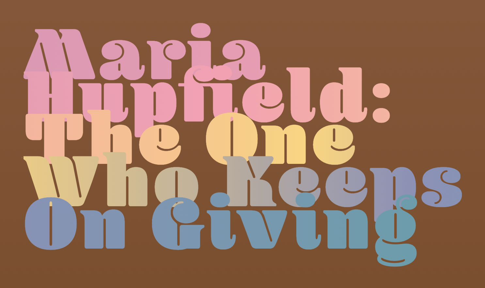
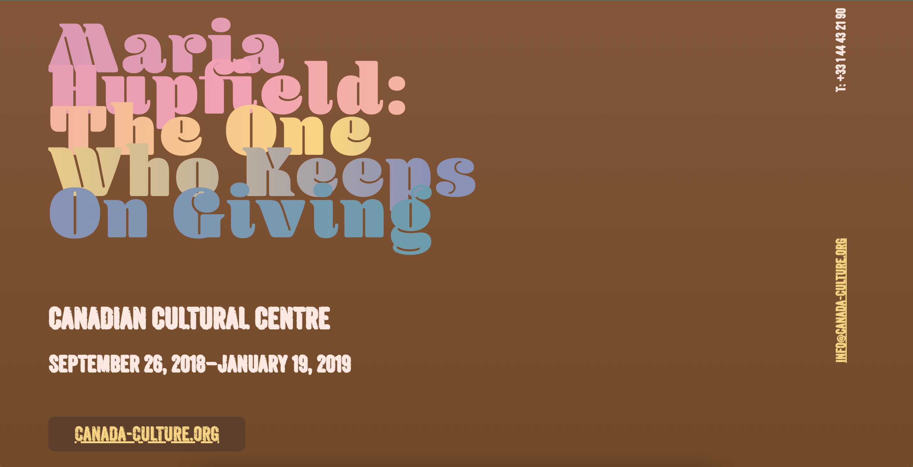

I chose the "Maria Hupfield" content package. The text talks about an indigenous art exhiition that goes on display at an art gallery. I don't know much about the Canadian indigenous culture, but I wanted the poster/landing page to embody the culture of the people. Hence, some research was necessary.
To start off, I started looking at some paintings and artwork done by Native artists to understand the aesthetic I should be aiming for. In particular, I looked at the works of Eloy Bida, a Native visual artist and illustrator.

My key takeaway from this phase in my research was noting the color scheme. I noticed that there was a lot of brown, with multiple pastel-colored highlights. This led me to the second phase of my research: experimenting with colors.
After some experimentation, I found the particular shade of brown that would form the main background of the poster, and keeping that constant, I played around with a few palettes and finally landed on a few different colors that I could pair with the brown.
I wanted to have a bold, rounded serif font for the headings and I wanted to pair it with a contrasting narrow sans-serif font. After some exploration on Adobe fonts, I came across the "Blenny" font.
It does seem like a font that would be used to design Latin posters, but I thought that this was a good fit. Now, I needed a rough, narrow sans-serif font to pair with this "Blenny" font. I decided to go with Anodyne, also found on Adobe fonts.
The examples shown to us in class played around with typography and they were extremely good.
However, I remember them being a little crowded and difficult to read. I wanted to go for a clean, spacious
design, which meant a good amount of empty space. I also added a background gradient from light to dark brown as
you scroll down the page to play around with the colors of the empty space.
I also had to reorder some of the content given in the HTML packet so that I could design the flexboxes and the
hierarchal text order in a way that made sense.
The contact details section is one of the most versatile sections on any web page, and I wanted to play around
with its location. Hence, I put it at the top of the page, rotated at 90 degrees
And rather than restricting the heading to only one color, I decided to use most of the highlights from the color palette as a gradient. I think it worked out well, which is why I tried to implement this color scheme on words that I need to draw attention to.
Paired with the rough, almost chalkboard-like style of the Anodyne font, I think the poster looked well-rounded. So now I just had to play around with the layouts of the flexboxes that I had created that contained different parts of the write-up.
I did want to add a collapsible div element to contain the 3 paragraphs of text at the bottom,
but for some reason as soon as I added the element, the orientation of the entire text changed by 90 degrees. I
was happy with the way the poster looked, but it was too static for my liking. Hence, I decided to add a hover
elemnt on the headinng, wherein it will change its color to white when hovered over it. The other interaction
I've added is on the "canada-culture.org" button that leads to an external site: it turns blue when hovered over
it.
*****